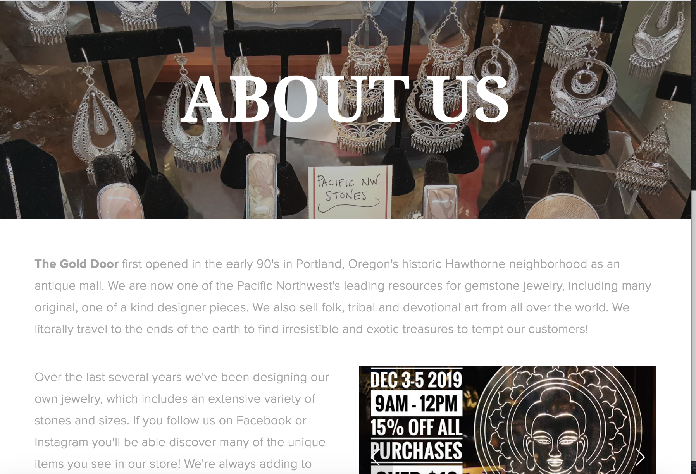
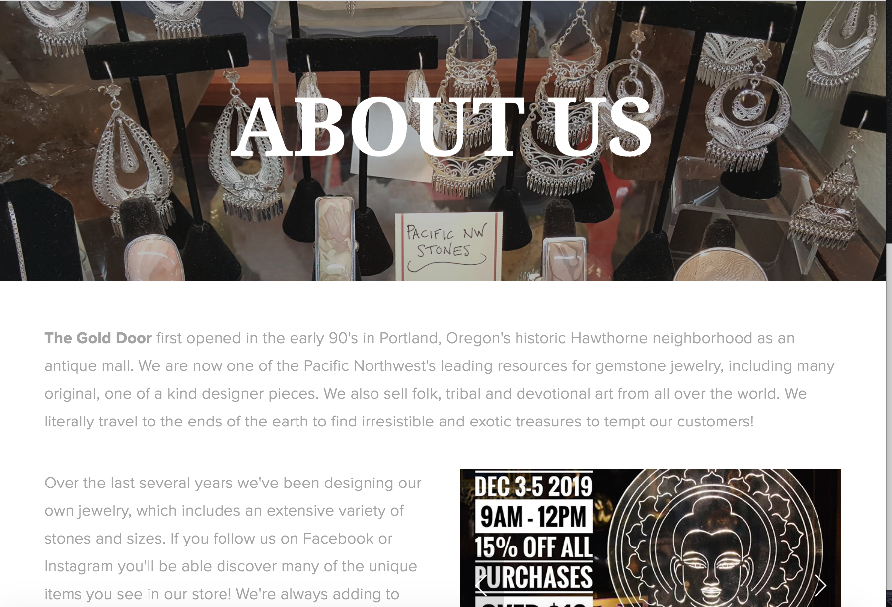
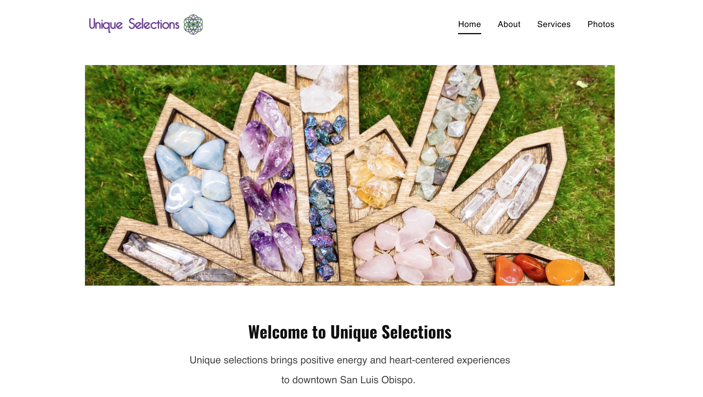
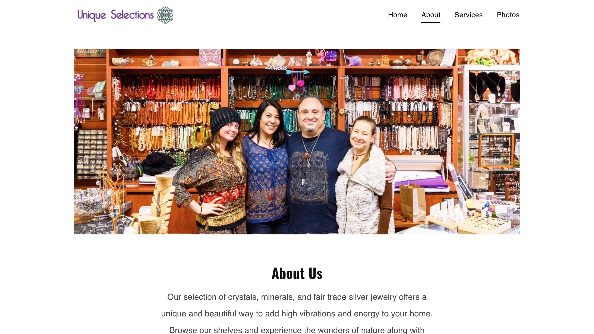
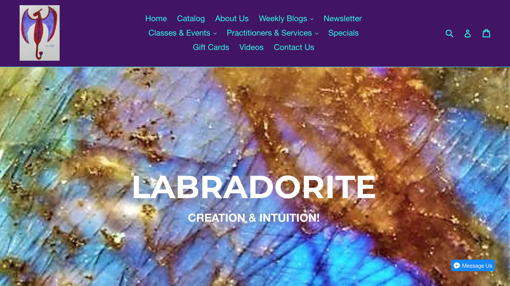
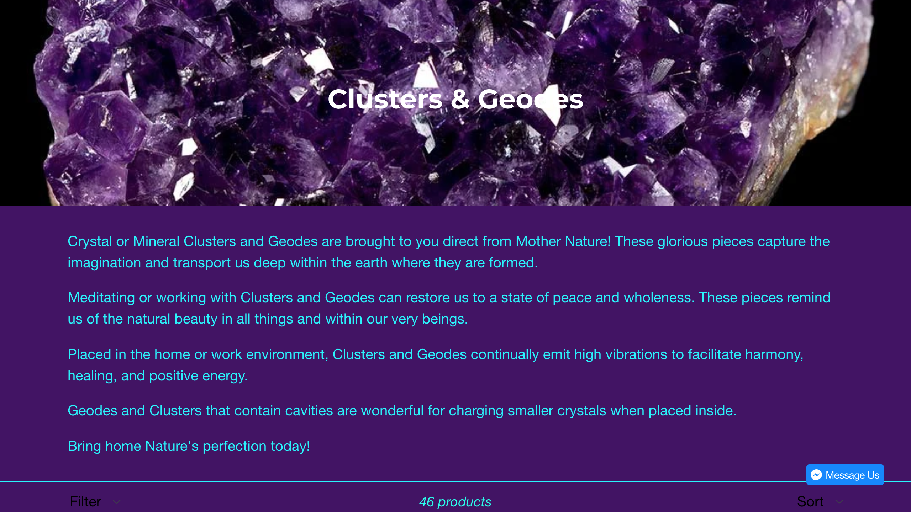

Final project proposal
Introduction
Crane Crystals
Crane Crystals is a one of a kind crystal jewelry shop located in Portland, Oregon. Featuring crystal necklaces, rings, bracelets and earrings, we have a unique piece to match any customer's style and personality.
Target audience
This site is directed toward a female demographic of all ages. Unique Portland women who love to showcase their style and personalities through jewelry is a more specific target audience for this shop.
These women are seeking a piece of jewelry that represents them well, while also adding some glamour to their lives. Whether a working woman or not, their goal is to not only look beautiful, but feel beautiful.
Comparative analysis
The Gold Door
 

Unique Selections
 Ruby Dragon Crystals
 Website content
Home
Crane Crystals is a one of a kind crystal jewelry shop located in the heart of Portland. We create and feature a large variety of beautiful necklaces, rings, bracelets and earrings, and our goal is to find the perfect piece that represents who you are. Welcome, and discover your unique crystal and jewelry piece here!
A variety of unique and beautiful crystals.
About Us
Established in 2014, Crane Crystals has been providing beauty and confidence to women of all ages and backgrounds. Founder Jess Crane wanted to give women the chance to express themselves through powerful and whimsical crystal jewelry. Come visit us at 14368 River Dr to find your new stunning piece!
Our founder and team
Crystals
Crystals are strong, gorgeous, unique, and powerful. Each one posses traits and purposes tailored to every aspect of life. Happy browsing!
natural rose quartz
Jewelry Gallery
You've found your perfect crystal, now discover the best way to display it
citrine pendant necklace